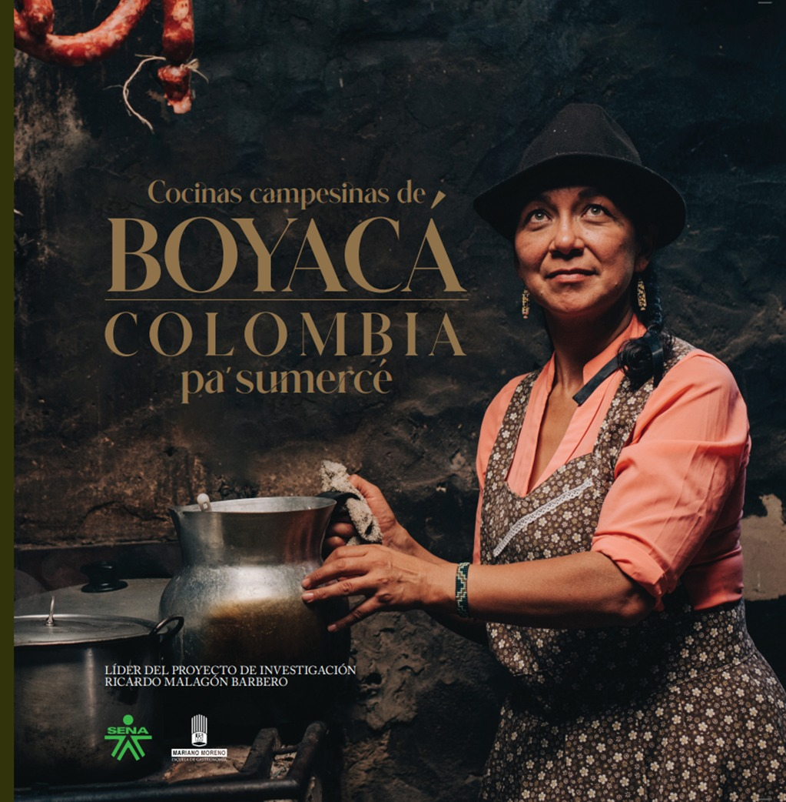

Platos tradicionales
- Cocido boyacense – Un banquete de papas, mazorcas, habas, chuguas, ibias, carne de cerdo y res.
- Arepas de maíz pelao – Preparadas de forma artesanal y asadas en tiesto.
- Mazamorra chiquita – Sopa espesa de maíz con carne y hortalizas.
- Chicha fermentada – Bebida ancestral a base de maíz fermentado.
Ingredientes locales
Paipa se destaca por el uso de productos frescos cultivados en la región: papa criolla, maíz, habas, arvejas, carne de res, cerdo y tubérculos andinos como la ibia y la rubia.

Sabores y técnicas
Los platos típicos se preparan con cocción lenta en leña, horneado artesanal y fermentación natural, resaltando sabores auténticos que se transmiten de generación en generación.
Festivales gastronómicos
Cada año, Paipa celebra ferias culinarias como el Festival Gastronómico y Turístico, donde se exponen recetas típicas, postres tradicionales y bebidas autóctonas, acompañadas de música y muestras culturales.